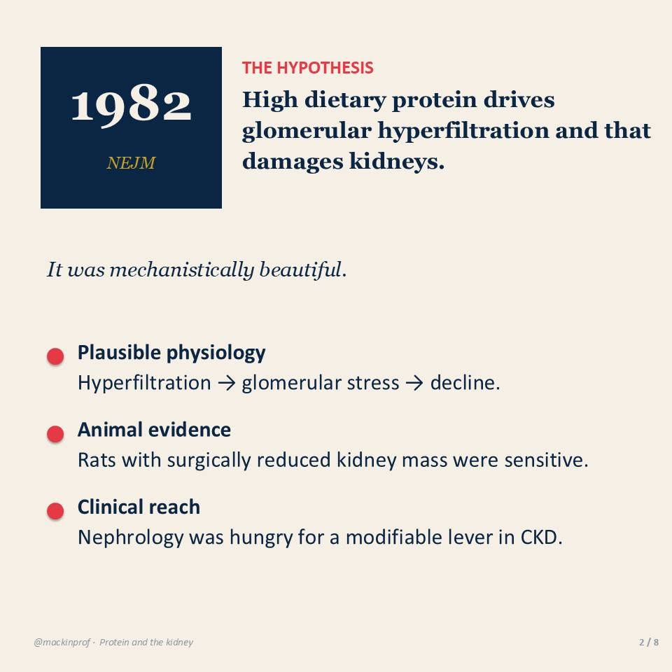
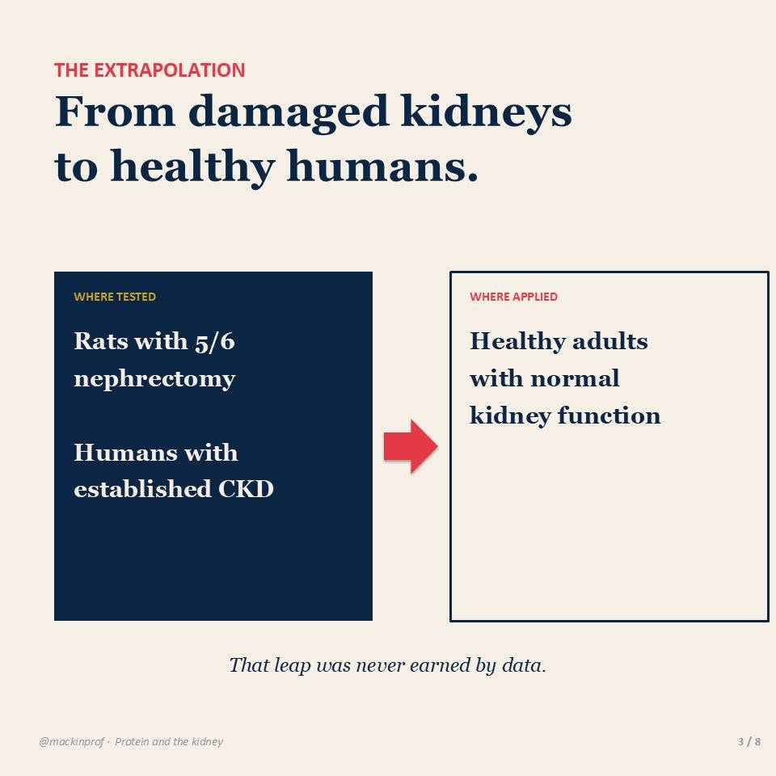
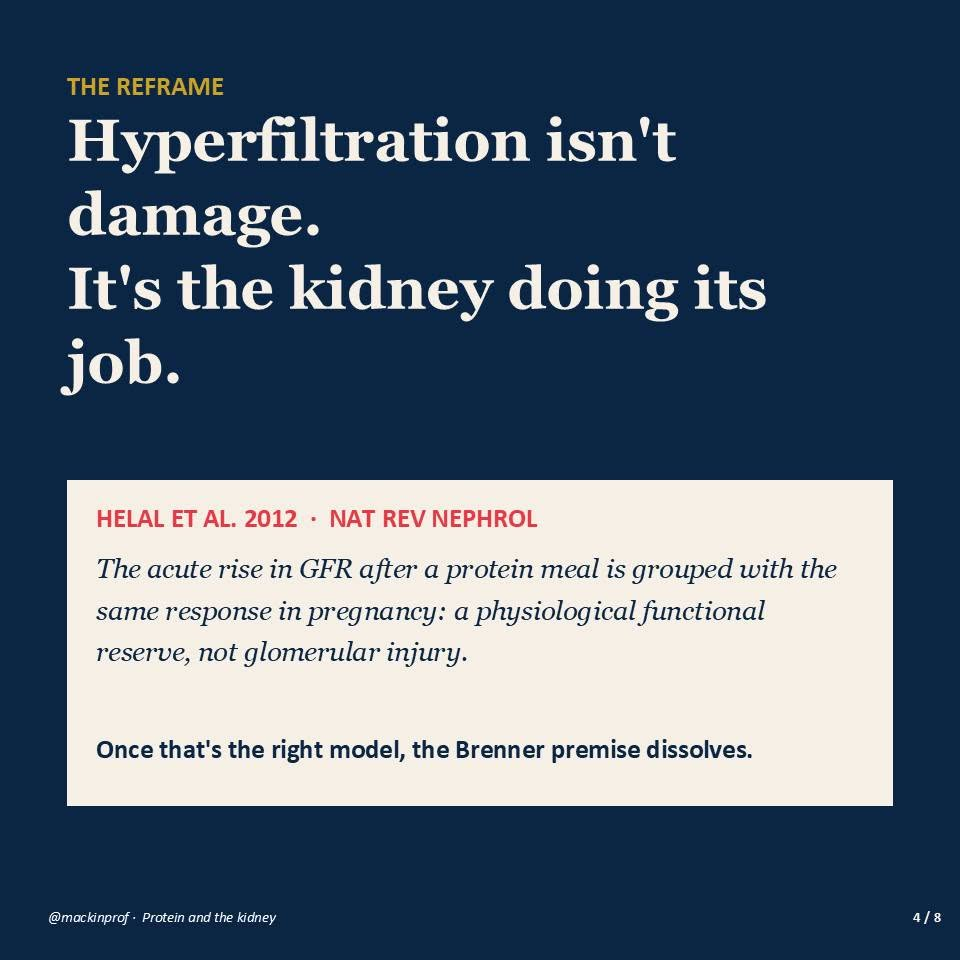
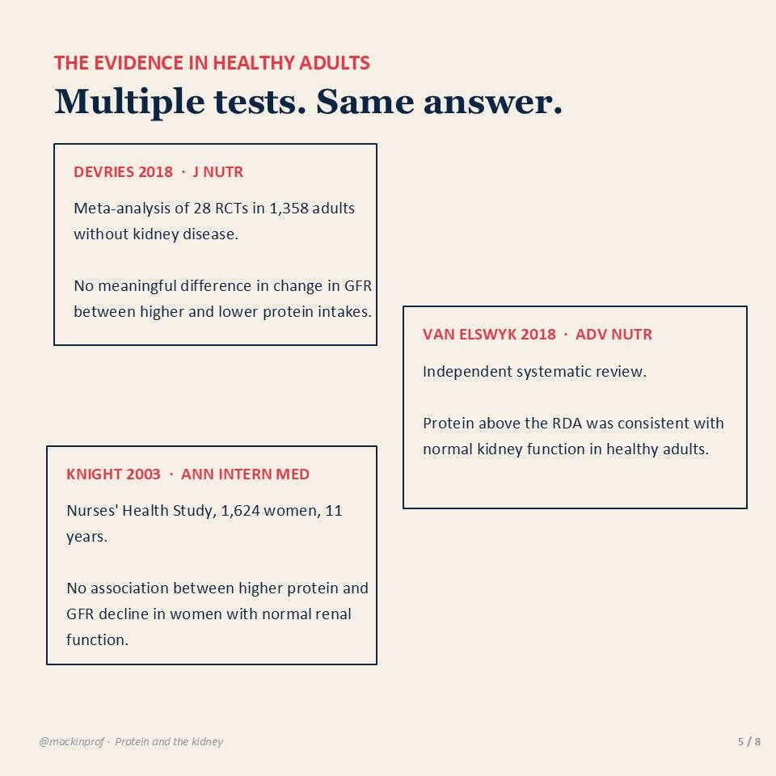

The preponderance of evidence demonstrates that high protein intake does NOT harm the kidneys of healthy people.
However, it can cause harm in people with existing kidney problems. This why low protein diets are part of the standard of care in nephrology.
#proteinHD #proteinsummaryHD #kidneysHD #proteinkidneysHD
Your doctor probably still warns you about protein. That warning traces back to a single 1982 paper. Forty years later, it hasn't held up where it actually matters.
Multiple direct tests in healthy humans. Consistent null. The Brenner hypothesis deserves an honest update.
In 1982, Brenner and colleagues proposed that high dietary protein damages the kidneys through chronic hyperfiltration. Mechanistically beautiful. Supported in rats with surgically reduced kidneys and in patients with established CKD. Then quietly extrapolated to healthy adults with normal kidney function. That leap was never earned.
What's happened since:
→ Helal et al. (2012, Nat Rev Nephrol) reframed post-meal hyperfiltration as functional reserve. The same response we see in pregnancy. Adaptation, not injury.
→ Devries et al. (2018, J Nutr) pooled 28 RCTs in 1,358 adults without kidney disease. No meaningful effect of higher protein on change in GFR.
→ Van Elswyk et al. (2018, Adv Nutr): independent systematic review. Same conclusion.
→ Knight et al. (2003, Ann Intern Med): 11-year follow-up in 1,624 women. No GFR decline from higher protein in those with normal renal function.
Where the original idea still holds: established CKD. The Cochrane review (Hahn et al., 2020) supports very-low-protein diets for slowing progression in stage 4 to 5 disease.
That's a correction, not a retraction.
What we need to stop doing is warning healthy adults off a macronutrient that, paired with resistance training, supports body composition, function, and healthspan. The people most likely to be told to ease up on protein (older adults, people losing weight, people recovering from illness) are very often the ones who could benefit from eating more of it.
A hypothesis that's been directly tested in the relevant populations for 4 decades, with a consistent null, deserves an honest update from the field. That's the job.
Save this. Send it to a clinician who needs it.




